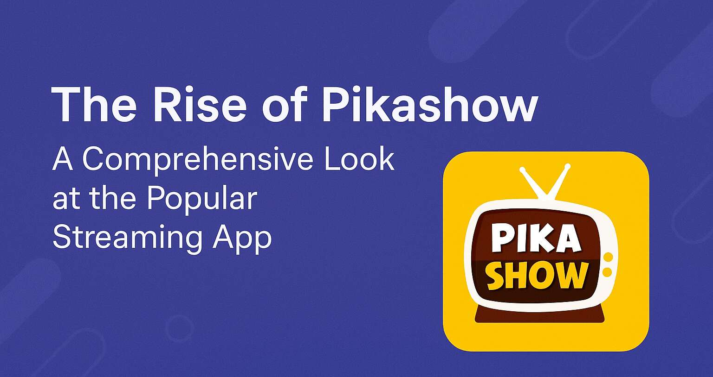

In recent years, the demand for online streaming platforms has skyrocketed, with users seeking convenient and affordable ways to access movies, TV shows, and live TV. Among the many apps that have emerged, Pikashow has gained significant popularity due to its extensive content library and user-friendly interface. This article explores the features, benefits, and controversies surrounding Pikashow, providing a detailed analysis of why it has become a preferred choice for many viewers.

Pikashow is a third-party streaming application that offers a vast collection of movies, TV series, live sports, and television channels from around the world. Unlike mainstream platforms like Netflix or Amazon Prime, Pikashow provides free access to premium content, making it an attractive option for users who want to avoid subscription fees. The app supports multiple languages and genres, catering to a diverse audience with varying entertainment preferences.
One of the key reasons behind Pikashow's popularity is its ability to stream high-definition content without requiring a paid membership. Users can watch the latest Hollywood blockbusters, Bollywood hits, regional films, and popular TV shows without any cost. Additionally, the app includes live TV channels, including sports networks, news broadcasts, and entertainment channels, further enhancing its appeal.
Pikashow stands out from other streaming apps due to its impressive range of features. The app is designed to provide a seamless viewing experience, with a well-organized interface that allows users to browse content effortlessly. It supports multiple resolutions, including HD and Full HD, ensuring that viewers can enjoy high-quality streaming based on their internet speed.
Another notable feature is the app's offline viewing capability. Users can download their favorite movies or episodes to watch later without an internet connection, making it ideal for travelers or those with limited data plans. The app also offers subtitles in various languages, enhancing accessibility for non-native speakers.
Pikashow frequently updates its content library, adding the latest releases shortly after they become available. This ensures that users have access to new movies and TV shows without long delays. The app also provides recommendations based on viewing history, helping users discover new content tailored to their interests.
The primary reason for Pikashow's widespread adoption is its cost-free model. With subscription-based platforms becoming increasingly expensive, many users are turning to free alternatives like Pikashow to fulfill their entertainment needs. The app eliminates the need for multiple subscriptions by offering a one-stop solution for movies, TV shows, and live TV.
Another factor contributing to its popularity is the extensive variety of content. From Hollywood and Bollywood films to regional cinema and international TV series, Pikashow caters to a global audience. The inclusion of live sports streaming has also attracted sports enthusiasts who want to watch matches without paying for premium sports channels.
The app's user-friendly design further enhances its appeal. Unlike some streaming platforms that have complex navigation systems, Pikashow is intuitive and easy to use. Even first-time users can quickly find and stream their desired content without any hassle.
Despite its popularity, Pikashow operates in a legal gray area. The app provides access to copyrighted content without proper licensing agreements, raising concerns about piracy. Many countries have strict laws against unauthorized streaming, and using apps like Pikashow may violate copyright regulations.
Content creators and production houses lose significant revenue due to piracy, as free streaming platforms reduce the number of legitimate viewers. This has led to crackdowns on illegal streaming services, with some apps being banned or taken down by authorities. Users should be aware of the legal risks associated with using such platforms, as accessing pirated content can result in penalties in certain jurisdictions.
Additionally, third-party apps like Pikashow may pose security risks. Since they are not available on official app stores, users must download them from external sources, which increases the chances of malware or data theft. It is essential to exercise caution and use reliable antivirus software when installing such applications.
For users who prefer legal and secure streaming options, several alternatives provide similar content without the associated risks. Platforms like Netflix, Amazon Prime Video, Disney+, and Hulu offer extensive libraries of movies and TV shows through licensed agreements. While these services require subscriptions, they ensure high-quality streaming, regular updates, and legal compliance.
Free ad-supported platforms like Tubi, Crackle, and Pluto TV also provide a wide range of movies and TV series without subscription fees. These platforms operate legally by generating revenue through advertisements, offering a safer alternative to piracy-based apps.
For live TV and sports, services like YouTube TV, Sling TV, and ESPN+ provide legitimate streaming options. Although they come at a cost, they guarantee high-definition streaming and reliable access to live events without legal concerns.
The future of Pikashow remains uncertain due to increasing legal pressures on piracy. Many similar apps have been shut down in the past, and Pikashow could face the same fate if authorities take action against it. However, as long as there is demand for free streaming, developers may continue to create similar platforms under different names.
To sustain its user base, Pikashow would need to address legal issues by obtaining proper content licenses or transitioning to an ad-supported model. Without such changes, the app risks being banned, leaving users to seek other alternatives.
Pikashow has undoubtedly become a popular choice for streaming enthusiasts due to its free access to a vast content library. Its user-friendly interface, high-quality streaming, and diverse entertainment options make it an appealing alternative to paid platforms. However, the app's legal and security concerns cannot be ignored. Users should weigh the risks before relying on such services and consider legal alternatives to support content creators and avoid potential penalties.
As the streaming industry continues to evolve, the demand for affordable and accessible entertainment will persist. Whether Pikashow adapts to legal standards or fades away, its rise highlights the growing need for flexible and cost-effective streaming solutions in today's digital age.